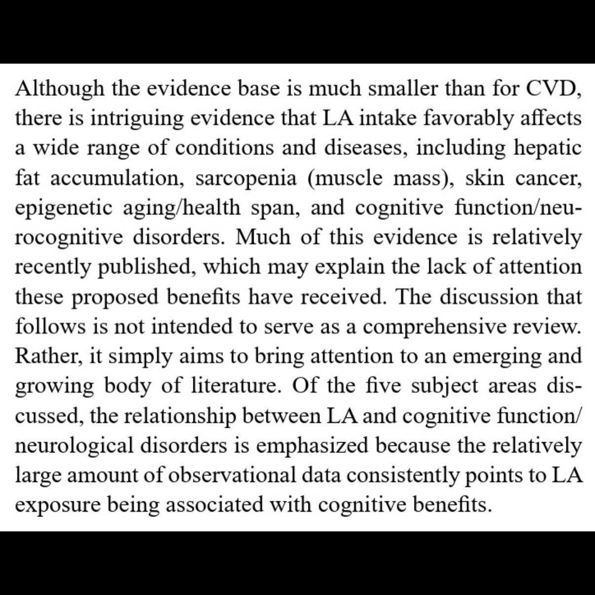
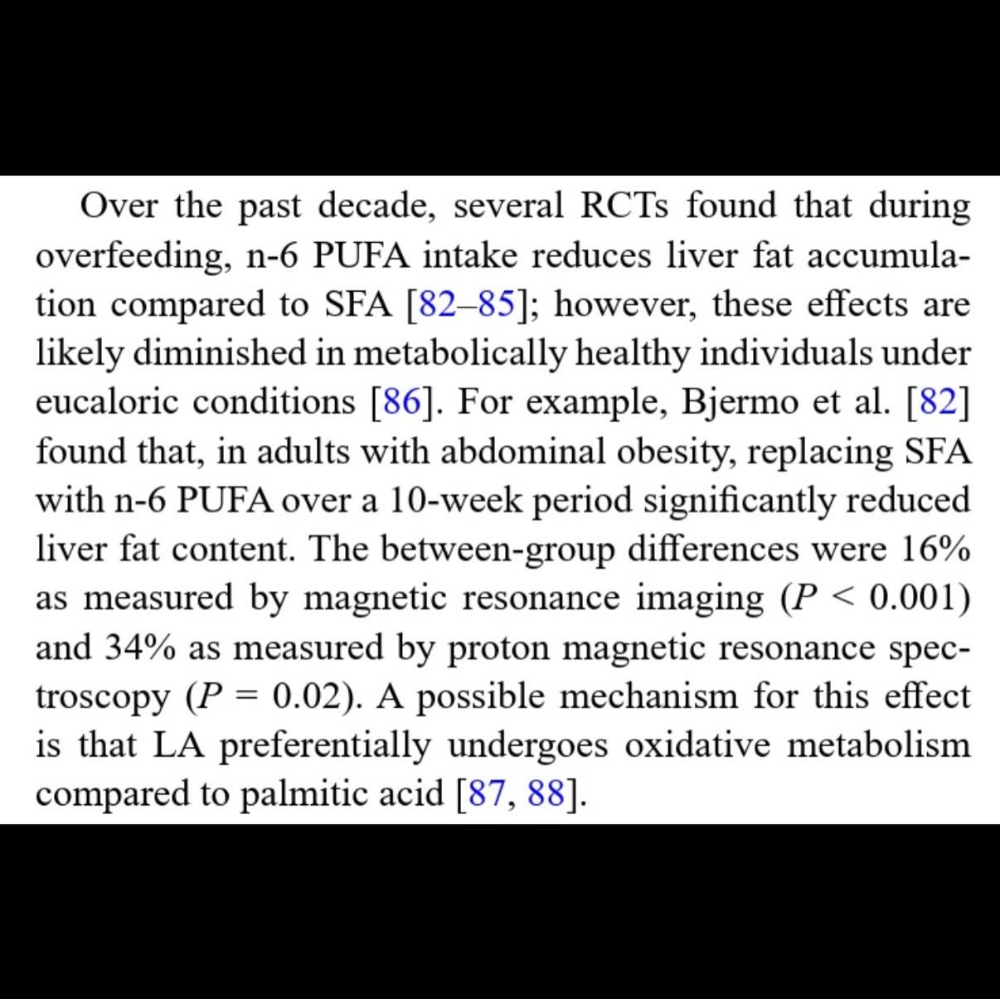
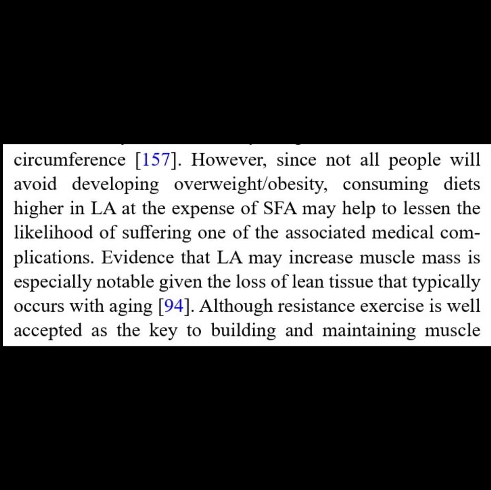
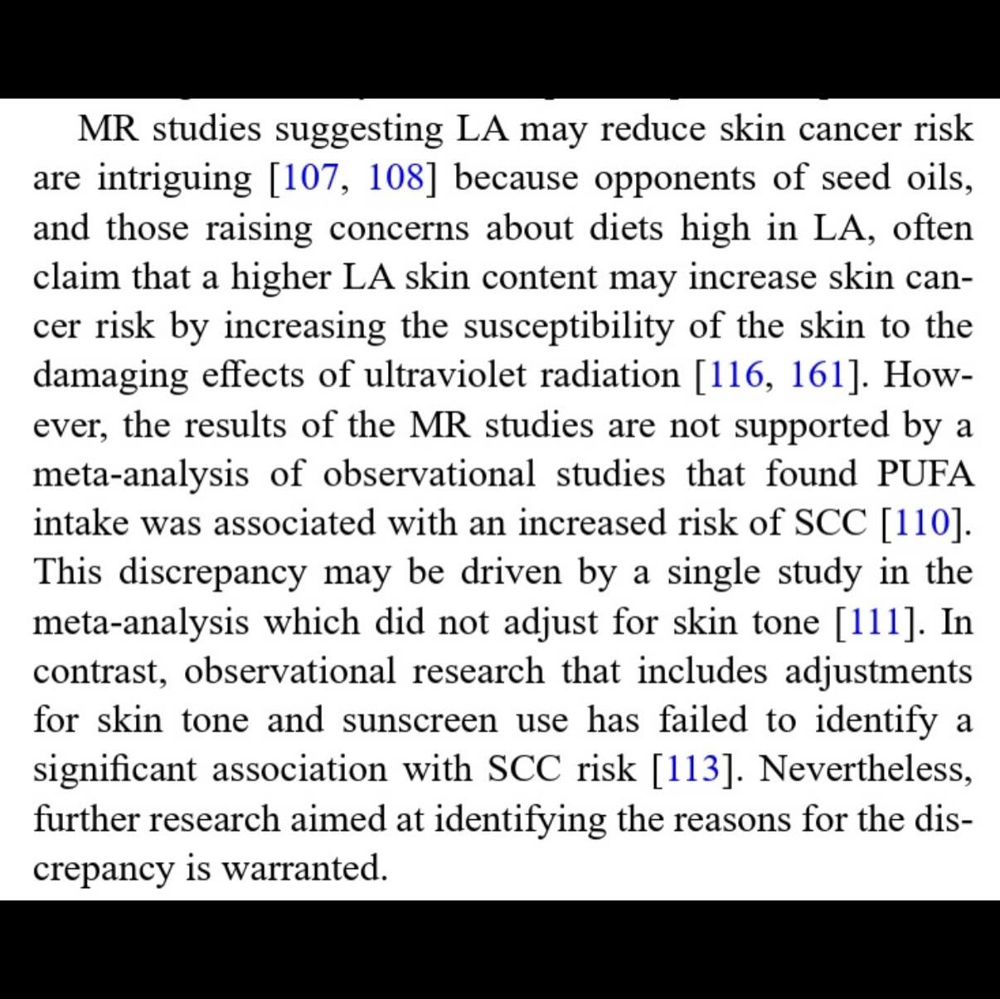

The essential omega 6 fat, linoleic acid, likely has health benefits that extend beyond heart disease.
These benefits may extend to the brain, liver, muscle, skin, and the aging process itself.
The chief source of this essential fat in the human diet is nuts and seeds, and of course, their extracted oils.
#linoleicacidHD #omega6HD #seedoilsHD #inflammation6HD #nutsHD #seedsHD #inflammationHD #brainHD #dementiaHD #liverfatHD #muscleHD #agingHD #epigeneticclockHD #skincancerHD #cancerHD #healthyuserbiasHD #ultraprocessedfoodHD #omega6liverfatHD
🚨NEW PUBLICATION🚨
Okay, maybe I’m being a little cheeky by calling it a seed oil review, specifically, since it’s actually about linoleic acid (LA). Anyway…
LA is the main omega-6 fat in seed oils (canola, sunflower, safflower, soybean, etc), nuts and seeds, and has been blamed for inflammation, heart disease, and just about everything else online. 🌻
Our new review in Current Nutrition Reports (co-authored with Mark Messina, David Goldman, and Sarah Nechuta) looked at what the research says beyond cardiovascular disease. The picture is more interesting than the social media narrative:
Brain health: 7 of 8 recent cohort studies found higher LA levels or intake associated with better cognition or lower risk of dementia and neurological disorders.
Liver fat: In RCTs of overfeeding or in individuals with overweight/obesity, replacing saturated fat with n-6 PUFA (predominantly LA) led to reduced liver fat accumulation.
Muscle mass: Several observational studies link higher LA with more lean mass.
Aging: Higher LA is associated with slower epigenetic aging and greater odds of “healthy aging” (survival to 80 free of major chronic disease).
Skin cancer: Genetic (Mendelian randomization) studies point toward lower risk of certain skin cancers, which runs counter to online claims. Observational data are mixed, but when skin tone and sunscreen use are accounted for, higher LA intake is not associated with risk.
Inflammation: clinical trials do not support the claim that seed oils or LA causes inflammation.
We also addressed claims over “healthy user bias.” We don’t tend to see those who consume more LA having significantly healthier overall diets. Much of the LA in typical diets comes from ultra-processed foods.
The data is limited but promising in a number of these areas. Nevertheless, it would be premature to say LA definitively causes these benefits. But there’s enough to belong in the conversation, and enough to justify conducting further research.
Full paper (also linked in bio):
Paper · Curr Nutr Rep · 2026Evidence Suggests Linoleic Acid Exerts Health Benefits Beyond Cardiovascular Disease: A Brief Review of Clinical and Observational Studieslink.springer.com
#seedoils #linoleicacid #omega6 #healthyfats #brainhealth




